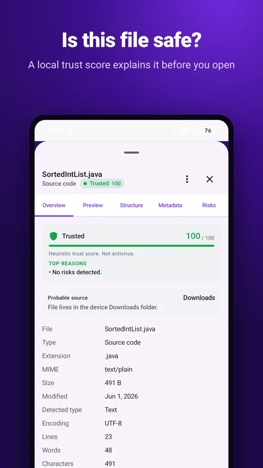
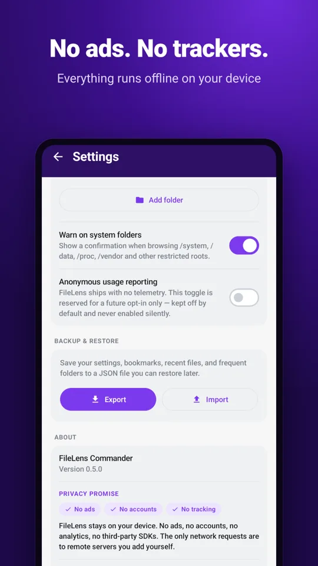

What is your file hiding?
Drop a photo to see the GPS location, camera and date hidden inside it, and remove them in one click. Drop any file to see what it really is, for example an app disguised as a .jpg.
Runs entirely in your browser. Your file is never uploaded.
Do this automatically on Android
FileLens removes the location when you share a photo, and checks files from WhatsApp, Telegram, email or your browser before you open them. It also works as a full file manager.
- No ads, no trackers, no account
- Works offline
- Free


Questions
How do I know my file is not uploaded?
The page forbids itself from sending data: its security policy blocks all network requests (connect-src 'none'). You can check it: open your browser's developer tools, go to the Network tab and drop a file — nothing is sent. You can also load the page, turn on airplane mode and it still works. The code is open on GitHub.
What can a photo reveal about me?
Phones store the exact GPS position where a photo was taken, the date and time, the phone model and sometimes the owner's name or a serial number. If you share the original file, anyone can read it. A photo taken at home reveals your home address.
Do WhatsApp, Telegram and social networks remove the location?
Most apps remove it when you send a picture as a normal photo, because they re-compress it. When you send it as a file or document, upload it to cloud storage, attach it to an email or post it on a forum, the original metadata usually stays. Check before you share.
Does removing metadata reduce the photo quality?
No. FileLens Check removes the metadata blocks without re-compressing the image, so the picture stays byte-for-byte the same. For JPEG it keeps only the orientation, so the photo is not shown sideways.
How do I spot a fake file, like an APK sent as a wedding invitation?
Scammers send Android apps (APK) or programs with names like invitation.jpg, bill.pdf.apk or names with hidden characters. This page reads the first bytes of the file, which show its real type no matter what the name says, and warns you when they don't match. Never install an APK you received in a chat.
Is this an antivirus?
No. It checks what a file really is and what it contains, which catches common tricks. It does not compare files against virus databases.